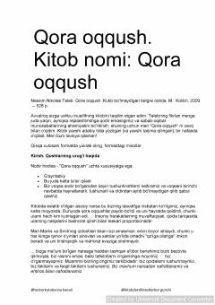

QOOldindan aytib bo'lmaydigan ulkan tasodifiy voqealar va ularning hayotimizga ta'siri haqidagi bestseller asar.
Ushbu kitob oldindan aytib bo'lmaydigan, kam uchraydigan va jamiyatga ulkan ta'sir ko'rsatadigan tasodifiy voqealar — "Qora oqqush" hodisasi haqida hikoya qiladi. Muallif insoniyatning kelajakni bashorat qilishdagi ojizligi, tasodiflarga nisbatan ko'rligi va tarixni tushunishdagi xatolarini chuqur tahlil qiladi.